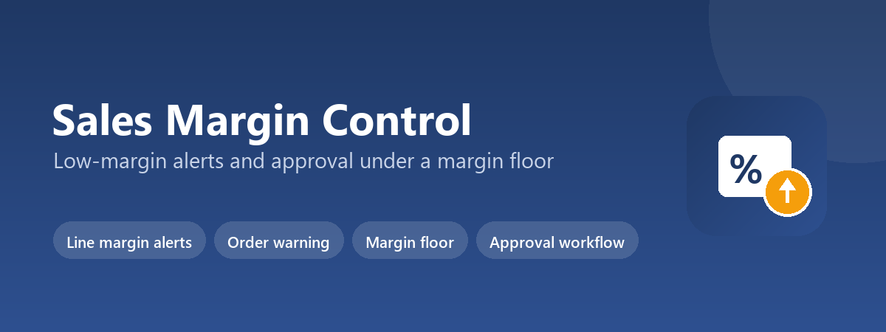

Highlights low-margin lines and orders while you quote, and holds any quotation under your margin floor until an approver says yes.
Salespeople see the margin of every line as they build a quotation, with thin margins highlighted. If the whole order is under the margin floor you set, clicking Confirm does not confirm it: the approvers get a task, and the order is confirmed only when one of them approves. It uses the standard Odoo margin figures, so there is nothing new to maintain.
📉 Low-margin line alertsA Margin % column on the order lines, highlighted when a line falls under the percentage you set. |
⚠ Order margin warningA banner on the quotation when the margin of the whole order is under your warning level. |
🔒 Margin floor approvalUnder the floor, a quotation cannot be confirmed until a margin approver approves it. |
👥 You choose approversPick the user group that approves margins. Leave it empty and the Sales Administrators approve. |
📋 Approver work listApprovers get a Margin Approval activity and a Margin Approvals list in the Sales menu. |
💬 Salesperson kept informedThe salesperson is notified when the margin is approved or rejected, and every step is logged on the order. |
Odoo 18.0 • Community & Enterprise • depends on Sales and Sales Margin • Licence LGPL-3
Odoo implementation and development. thecodelegion.com